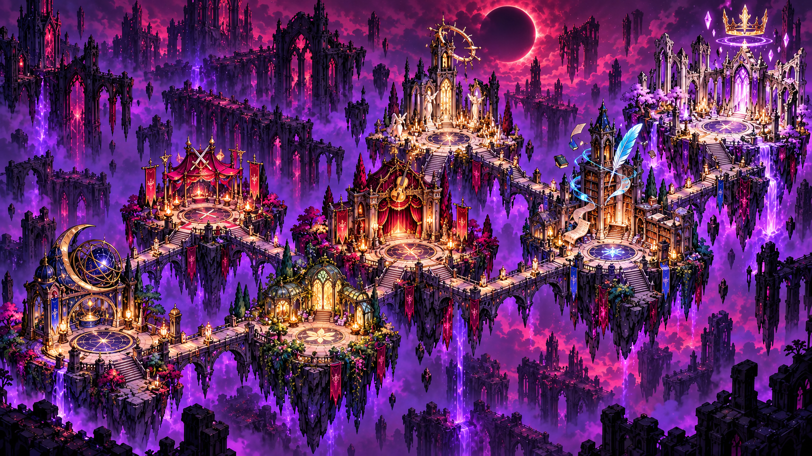

SHADOW TRIALS · DERDE REGIO · 15—21
The Court of
Unwritten Tomorrows
Zeven eigenaardige tegenstanders. Zeven eigen arena’s.
Een nieuwe reis door de schaduwen van Verseborn.

III
The Court of Unwritten TomorrowsKies een bestemming om de baas en animaties te bekijken
Idle / Taunt
16 getekende idleframes met wapentaunts en expressies · melee, magic, healing, guard, ultimate en death
DE COLLECTIE
Een eigen karakter,
tot in de laatste pose.
Donkere kleding, heldere anime-lijnen en expressieve silhouetten, afgestemd op de Flameguard en Stonewake-personages.
De animaties staan op een vaste voetlijn. Wapens, capes, kronen en losse spreukeffecten krijgen hun eigen ruimte.
Deze preview toont de assets en de derde map. De nieuwe gevechtsregels zijn hier niet speelbaar.
Bekijk de assetlijst ↗